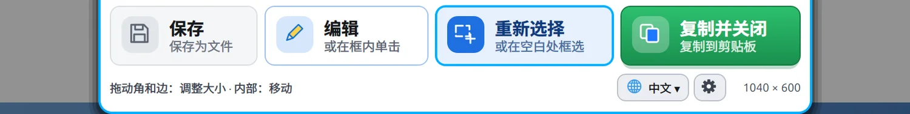
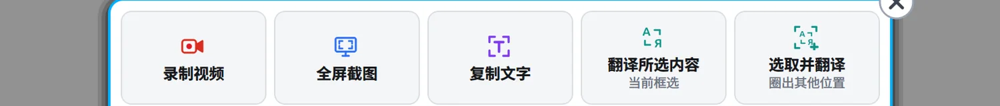
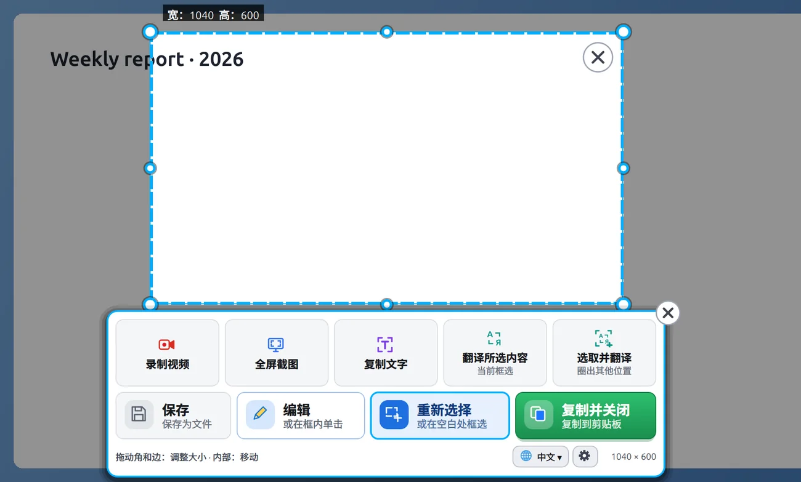
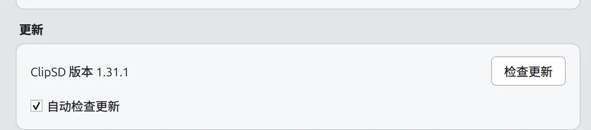
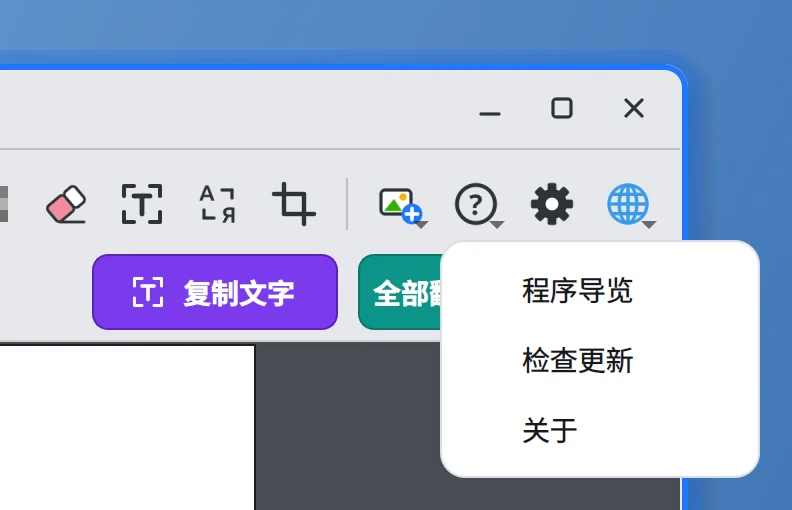
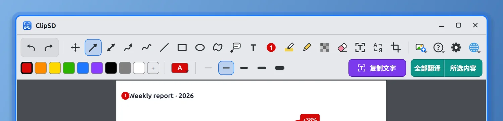
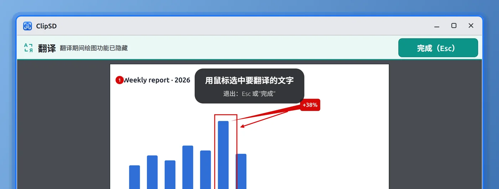
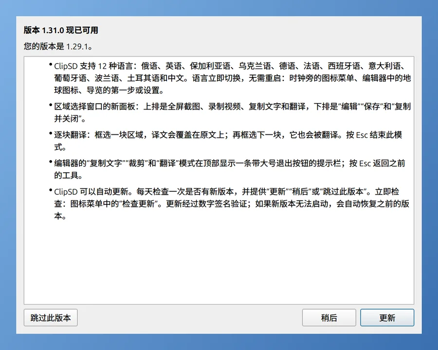

版本历史
版本 1.31.1
发布于
- 在选取区域的窗口里可以直接切换语言并打开设置：面板底部、尺寸左侧有一个带语言名称的地球图标和一个齿轮。

- 翻译分成两个按钮：“翻译所选内容”翻译已有的框，“选取并翻译”让你圈出其他位置。翻译整个屏幕移到了翻译模式的那一行，按钮是“整个屏幕”。

- 选取窗口里的面板缩小了约 15%，并且放在框的旁边而不是压在框上：下方、上方、右侧或左侧。只有外面没有空位时才进入框内。

- 设置里新增“更新”部分：版本号、“检查更新”按钮和自动检查的勾选框。编辑器里的“?”按钮现在会打开一个菜单：“程序导览”、“检查更新”和“关于”。


- 编辑器里“撤销”和“重做”排在这一行的最前面，带有单独的底衬。工具默认这样排列：移动、相邻的箭头、再是图形、然后是其余。你自己设置的顺序不会改变。

- 地球图标处处是浅蓝色，更容易找到。
- Linux：修复了首次安装，之前它可能在中途悄悄停止。


版本 1.31.0
发布于
- ClipSD 支持 12 种语言：俄语、英语、保加利亚语、乌克兰语、德语、法语、西班牙语、意大利语、葡萄牙语、波兰语、土耳其语和中文。语言立即切换，无需重启：时钟旁的图标菜单、编辑器中的地球图标、导览的第一步或设置。

- 区域选择窗口的新面板：上排是全屏截图、录制视频、复制文字和翻译，下排是“编辑”“保存”和“复制并关闭”。

- 逐块翻译：框选一块区域，译文会覆盖在原文上；再框选下一块，它也会被翻译。按 Esc 结束此模式。

- 编辑器的“复制文字”“裁剪”和“翻译”模式在顶部显示一条带大号退出按钮的提示栏；按 Esc 返回之前的工具。

- ClipSD 可以自动更新。每天检查一次是否有新版本，并提供“更新”“稍后”或“跳过此版本”。立即检查：图标菜单中的“检查更新”。更新经过数字签名验证；如果新版本无法启动，会自动恢复之前的版本。
